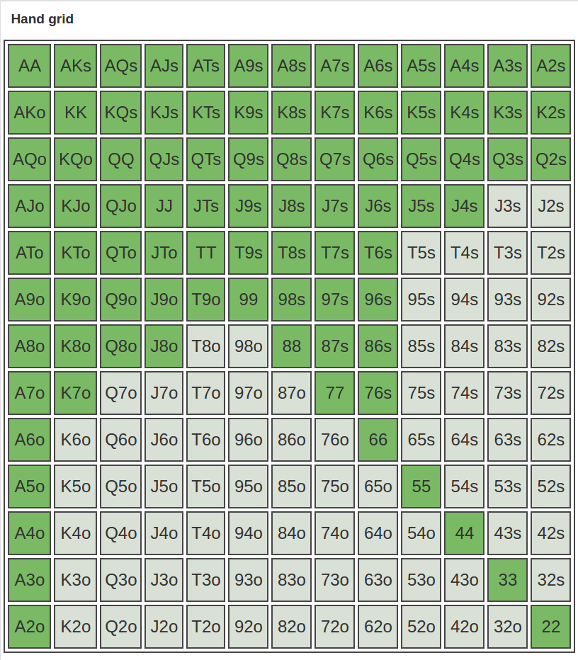

Poker Basics
Roeland Matthijssens
Position
Money travels clockwise in the direction of the button
Minimize losses
Maximize winnings
More information
Cheaper to play drawy hands
Easier to get away from drawy hands
Bluffing is harder OOP
Hand Ranges
10%
15%
30%
45%
These ranges are only applicable when deciding to open the hand
Easy odds estimation
outs x2 per card (*)
Exercise:
Flush draw
Exercise:
Flush draw
cards that can help: AKQJ87543 of clubs (9 cards)
Odds of hitting on turn (9x2 = 18%)
Odds of hitting on turn OR river (9x2x2 = 36%)
Exercise:
Straight draw (open ended)

Exercise:
Straight draw (open ended)
Exercise:
Straight draw (gutshot)
Exercise:
Straight draw (gutshot)
Exercise:
Overcards
Exercise:
Overcards
Pot Odds
Vilain bets just half pot this gives you 25% pot odds
Vilain bets full pot this gives you 33% pot odds
Based on your equity (outs) and the pot odds decide if calling is profitable
Bet sizing is important!!
Don't allow drawing hands to see free/cheap cards
Good practices in game
Don't limp
Play loose in position
Play tight out of position
Try to get headsup post flop
Make your bet count
Minimize (semi)bluffing range
Set mine small pocket pairs
How To Set Mine
Don't call large(5bb+) preflop bets with small PP (TT-)
Only call deep stacked players (12-1)
Fold small pocket pairs postflop to any aggression
Overpairs are playable but be carefull
Be ready to ship it when you hit the set
Types of bets
3bet/4bet/...
Continuation bet
squeeze
Donk bet
Valuebet
Blocking bet
Bluff/semibluff
Info bet
Tools
Hand analyser
http://www.cardplayer.com/poker-tools/odds-calculator/texas-holdem
Hand range calculator
http://www.pokerhandrange.com/
Future topics
Player types
Playing against player types
Levels of thinking
Fold equity
Implied odds
Reverse implied odds
Hand reading
HUDs/vpip/pfr/af/...
Online table picking
...